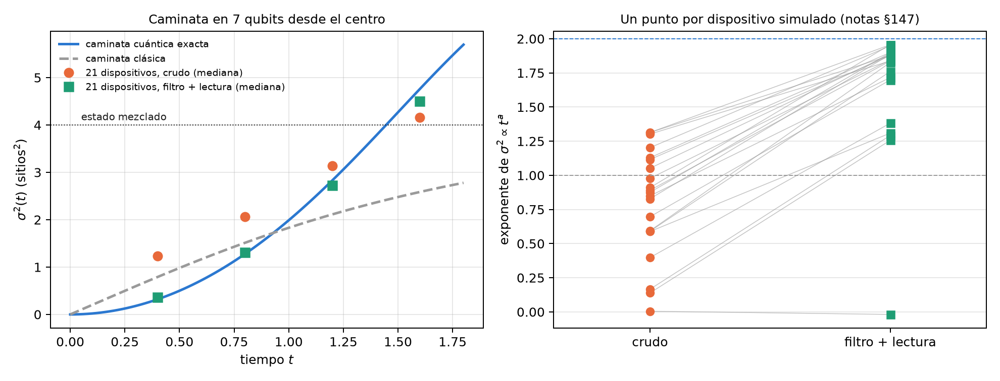
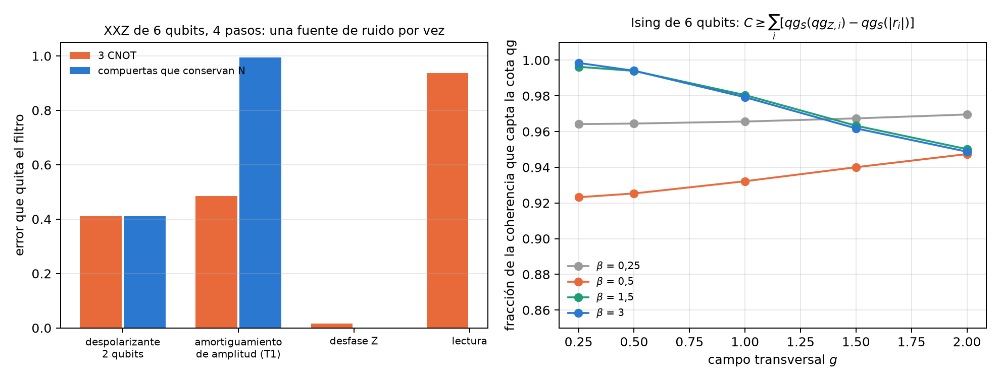

24 Simulación hamiltoniana, caminatas cuánticas y VarQTE
Simular la evolución de un sistema cuántico es la aplicación más natural de una computadora cuántica, y es también donde el filtro qg del capítulo 21 llega más lejos: muchos hamiltonianos de la física conservan el número de excitaciones, y sus circuitos de Trotter también. Entonces el peso de Hamming de cada disparo es un testigo gratuito, y el filtro se aplica a todos los observables que se leen en Z. Este capítulo recorre la evolución en el tiempo en la escala del capítulo 1: cadenas XY y XXZ, una caminata cuántica, canales de ruido como mapas de las lecturas, evolución variacional a profundidad fija y, más brevemente, ecuaciones diferenciales, Hubbard, una teoría de gauge, coherencia en Ising y máquinas de Boltzmann. Lo estructural se verifica con código; los resultados en modelos de ruido de dispositivos son los de las corridas registradas de las notas, leídos de sus archivos guardados.
24.1 Desde la base: conservar N es tener un filtro
En la escala del capítulo 1, cada qubit lee \(m_Z=1000(1-2p)\), con \(p\) la probabilidad de que esté excitado. El número de excitaciones de un disparo es su peso de Hamming, y la lectura media del registro lo cuenta: \(N=\sum_i(1-qg_{Z,i})/2\). Si el hamiltoniano conserva \(N\) y cada compuerta del circuito también, todo disparo con el peso equivocado tuvo un error, y el filtro lo descarta (capítulo 21).
Con una sola excitación, el estado vive en \(n\) amplitudes, una por qubit: la excitación salta entre qubits vecinos. Es una caminata cuántica de tiempo continuo, y la lectura de cada qubit dice dónde está el caminante.
24.2 Trotter y la caminata cuántica en la cadena XY
La cadena XY con campos, \(H=J\sum_k(X_kX_{k+1}+Y_kY_{k+1})/2+\sum_kh_kZ_k/2\), conserva \(N\), y su circuito de Trotter de primer orden usa sólo \(R_Z\) y compuertas XX+YY, que también lo conservan (notas, §147).
Cuántos pasos. Más pasos de Trotter bajan el error de Trotter y suman ruido, así que en un dispositivo el error tiene un mínimo en un número de pasos \(r^*\). Sin ruido, con \(n=5\), campos al azar y \(T=3\), el script recalcula el error de Trotter: 0,381, 0,363, 0,221, 0,140, 0,078, 0,054 y 0,033 con 1, 2, 3, 4, 6, 8 y 12 pasos. En los 21 modelos de ruido de dispositivos IBM de las notas, el filtro (más la corrección de lectura) bajó el mejor error a la mitad (mediana 0,147 → 0,067; de 1,6 a 2,8 veces según el dispositivo) y llevó \(r^*\) de 8 a 12 pasos en la mediana: el filtro deja usar circuitos más profundos. En 11 dispositivos el óptimo fue 12, el más profundo probado.
La caminata. Con \(n=7\) y el caminante en el centro, la varianza de su posición \(\sigma^2(t)\) crece como \(t^2\) en una caminata cuántica (balística) y como \(t\) en una clásica (difusiva). El script lo calcula con la evolución exacta en el sector de peso 1:
| \(t\) | 0,4 | 0,8 | 1,2 | 1,6 | exponente |
|---|---|---|---|---|---|
| caminata cuántica exacta | 0,320 | 1,278 | 2,832 | 4,759 | 1,96 |
| con los pasos de Trotter | 0,327 | 1,291 | 2,832 | 4,737 | 1,94 |
| caminata clásica, misma tasa | 0,791 | 1,513 | 2,113 | 2,585 | 0,86 |
En los dispositivos simulados, los datos crudos parecen una caminata clásica: exponente mediano 0,87, porque el ruido desparrama al caminante desde el principio. Con el filtro vuelve a ser balística: exponente mediano 1,84, y \(\sigma^2\) queda a menos de 20 % del valor exacto en los cuatro tiempos en 15 de 21 dispositivos (crudo: ninguno). La predicción registrada pedía exponente de al menos 1,5 en 18 dispositivos y se cumplió en 16: falló. Los cuatro más ruidosos quedaron entre 1,26 y 1,38, y FakeKyoto en cero.

24.3 Varias excitaciones: la cadena XXZ
La cadena XXZ agrega una interacción \(V\,Z_kZ_{k+1}/4\): las excitaciones interactúan y todo sigue conservando \(N\). Aquí la compilación importa (notas §60). El script mide, con matrices densidad exactas (\(n=6\), 4 pasos), qué parte del error del desbalance quita el filtro con una fuente de ruido por vez:
| ruido | 3 CNOT por enlace | compuertas que conservan \(N\) |
|---|---|---|
| despolarizante de 2 qubits, 0,01 | 41,1 % | 41,1 % |
| amortiguamiento de amplitud (T1), 0,01 | 48,5 % | 99,5 % |
| desfase en Z, 0,01 | 1,6 % | 0,0 % |
| lectura, 0,02 | 93,8 % | — |
- El T1 se filtra a través de los CNOT. Cada decaimiento baja \(N\), y el filtro lo detecta si el estado está en el sector cuando ocurre. Dentro de un enlace de tres CNOT los estados intermedios no están en el sector, y un decaimiento a mitad de compuerta puede volver a \(N=n/2\) y pasar. Con compuertas que conservan \(N\) en todo momento, el filtro quita el 99,5 %.
- El desfase en Z no cambia \(N\), y el filtro no lo ve.
- Con ruido mezclado, filtro más ZNE queda entre 2,6 y 8 veces por debajo del mejor método solo hasta 4 pasos (§60).
En los 21 dispositivos IBM simulados con \(n=6\) (§148), la ganancia del filtro baja de 5,6 veces con una excitación a 2,6 con dos y con tres: los sectores con más excitaciones conservan más disparos, pero más ruido cae dentro de ellos. La predicción de que el filtro nunca empeora falló en uno de 63 casos (FakeKyoto a mitad de llenado). En el modelo de ruido de IonQ forte-1 (§61), el filtro quitó la mitad del error en las dos compilaciones XY, con un cociente de 0,82 entre ellas, dentro de la banda registrada: en iones atrapados, sin T1 dominante, la fuga de los CNOT no aparece.
24.4 Los canales como mapas afines de las lecturas
Un qubit es \(\rho=(I+r\cdot\sigma)/2\) con \(r=(qg_X,qg_Y,qg_Z)\). Todo canal con operadores de Kraus actúa como \(r'=Mr+c\) (notas §162, qang.channels.bloch_affine): las lecturas después de cualquier ruido son afines en las de antes. El script lo comprueba en 800 estados al azar a \(2{,}8\cdot10^{-16}\). En la escala del capítulo 1:
- amortiguamiento de amplitud \(\gamma\): \(m_Z\to(1-\gamma)m_Z+1000\gamma\), y \(m_X,m_Y\) se multiplican por \(\sqrt{1-\gamma}\) (con \(\gamma=0{,}3\): 0,7 y 0,837);
- desfase: no toca \(m_Z\); despolarizante: multiplica las tres lecturas por el mismo número y conserva el ángulo qang;
- relajación T1/T2 durante \(t\): \(m_Z\to e^{-t/T_1}m_Z+(1-e^{-t/T_1})(1-2p_1)\cdot1000\) y \(m_{X,Y}\to e^{-t/T_2}m_{X,Y}\) (con \(t=0{,}5\), \(T_1=1\), \(T_2=0{,}8\): 0,6065 y 0,5353, que son \(e^{-0{,}5}\) y \(e^{-0{,}625}\)).
Es la imagen del capítulo 1 llevada al ruido: cada canal mueve el punto de lectura dentro de la esfera con una regla lineal.
24.5 Evolución variacional a profundidad fija
Trotter crece con el tiempo: más tiempo, más pasos, más compuertas. La evolución variacional (VarQTE, principio de McLachlan) fija el circuito y cambia sólo sus ángulos (notas §162). Con un ansatz que conserva el peso (6 capas de RBS y \(R_Z\), 54 parámetros, 48 compuertas de dos qubits), el filtro sigue valiendo. La integración es clásica; el dispositivo prepara y lee el estado. El script recalcula la fidelidad sin ruido de los ángulos guardados por la corrida de las notas (cadena XXZ, \(n=5\), \(V=2\), dos excitaciones): 0,9999, 0,9956, 0,967 y 0,934 en \(t=0{,}5\), 1, 1,5 y 2, iguales a las guardadas.
| dispositivo | error filtrado en \(t=2\): variacional / mejor Trotter (72 compuertas) | error variacional, \(t=0{,}5\to2\) |
|---|---|---|
| FakeBrisbane | 0,036 / 0,076 | 0,052, 0,030, 0,030, 0,036 |
| FakeTorino | 0,030 / 0,042 | 0,034, 0,022, 0,012, 0,030 |
| FakeFez | 0,022 / 0,032 | 0,017, 0,008, 0,005, 0,022 |
En tiempos largos gana la profundidad fija, en los tres dispositivos, aunque su fidelidad sin ruido sea sólo 0,934 (la predicción de que pasaría 0,95 falló). El error variacional queda plano y el del mejor Trotter crece de 2,6 a 11 veces. Antes de \(t\approx1\) gana un Trotter corto. Límite: con \(n=5\) todo es trivial clásicamente, y en hardware la integración pediría circuitos de métrica y gradiente en cada paso.
24.6 Ecuaciones diferenciales
Un circuito de un qubit con recarga de datos puede resolver una ecuación diferencial: \(u(x)=u_0+s(f(x)-f(0))\) con \(f=\langle Z\rangle\), entrenado sobre el residuo (notas §22). La pregunta de qang es cómo codificar \(x\): en el ángulo, o con \(\arccos\), para que \(x\) sea una lectura qg. Resultado de las notas: qg gana con claridad en el decaimiento exponencial (2,3, 17 y 6,6 veces mejor que la mejor escala de ángulo con 2, 3 y 4 capas) y no gana en general: en la logística el ángulo es unas 2 veces mejor, y en el seno 25 veces. qg no tiene escala que ajustar; el ángulo sí (con escala \(\pi\) falla en todo). El control clásico, colocación de Chebyshev con tantos coeficientes como parámetros, resuelve todo a \(10^{-7}\) o mejor. El resultado dice qué codificación usar, no que el circuito le gane a un método clásico.
24.7 Hubbard y una teoría de gauge: filtros de simetría en todos los observables
Hubbard 1D (notas §29): 4 sitios en 8 qubits, con un registro para cada espín. El hamiltoniano conserva \(N_\uparrow\) y \(N_\downarrow\), así que cada registro tiene lectura media cero en todo momento, y todos los observables (desbalance de carga, doble ocupación) están en Z. El script lo comprueba sin ruido: lectura media 0 en los dos registros y fracción conservada 1 en 1, 2, 4 y 8 pasos. En las notas, los filtros reducen el error aproximadamente a la mitad en un dispositivo sin enrutamiento, y ZNE más filtros de espín da la mejor doble ocupación (6 a 9 veces por debajo de la cruda). En la red heavy-hex, el enrutamiento crea fugas de espín (de 8 a 47 % de los disparos con el \(N\) correcto caen en el sector de espín equivocado), y ahí el segundo filtro paga. Desde 4 pasos todo queda en el piso de ruido.
Gauge \(\mathbb Z_2\) en red (§66): 4 sitios de materia y 3 enlaces. La ley de Gauss \(G_j\) es un producto de Z, así que es la lectura qg de una paridad: los mismos disparos en Z dan los testigos locales de Gauss y tres filtros (\(N\), Gauss y ambos). El script comprueba que sin ruido cada \(\langle G_j\rangle\) vale exactamente \(\pm1\) y no se pierde ningún disparo. En las notas, con 2 pasos, el filtro de Gauss quita más que el de \(N\) (80 contra 64 % con ruido despolarizante) y los dos juntos, 90 %. Bajo T1, 58–65 %: la misma fuga de los CNOT. Los testigos locales no ubican los errores en este modelo homogéneo. La post-selección por la ley de Gauss es conocida; lo que agrega qang es leerla como qg de paridades en los mismos disparos.
24.8 Coherencia en el Ising de campo transversal
La diferencia entre la entropía en la base Z y la entropía del estado es una medida conocida: la entropía relativa de coherencia \(C(\rho)\) (Baumgratz et al. 2014). Necesita la entropía del estado, que los conteos no dan. Las notas (§34) proponen una cota con dos lecturas por qubit:
\[ C\geq\sum_i\left[qg_S(qg_{Z,i})-qg_S(|r_i|)\right],\qquad |r_i|=\sqrt{qg_{X,i}^2+qg_{Y,i}^2+qg_{Z,i}^2}. \]
El script la evalúa en estados térmicos del anillo de Ising de 6 qubits en 20 puntos (\(\beta\) de 0,25 a 3, campo \(g\) de 0,25 a 2): capta entre 92,3 y 99,8 % de la coherencia (Figura 24.2, derecha). La cota de un solo qubit capta 15–17 % (1/6 de la suma, por simetría), y la cota por entropías de base es inútil: llega a −5,9 bits. Con 1000 disparos la cota se lee con ±0,04 bits. Donde falla: en un estado de grafo cada qubit reducido es \(I/2\) y la cota da 0 con \(C=6\) bits. Lo ajustado es una propiedad de estos estados térmicos, no una ley.

24.9 Máquinas de Boltzmann: el plano I–η
Una revisión reciente (Singh et al. 2026) mira cada par visible–oculto de una RBM por dos números: la covarianza \(\eta\) y la información mutua \(I\), que caen entre dos cotas \(LB(\eta)\) y \(UB(\eta)\), y observa que las RBM entrenadas quedan sobre \(LB\). En qg (notas §47), un par de espines queda fijado por tres números, \(qg_v\), \(qg_h\) y \(\eta\), y el script verifica: \(LB\) es exactamente el caso de marginales nulas (\(2{,}2\cdot10^{-16}\)) y el mínimo de \(I\) a \(\eta\) fija; \(UB\) es el par trabado con \(|qg_v|=|qg_h|=\sqrt{1-\eta}\) (\(2{,}9\cdot10^{-15}\)). Entre las dos, a orden principal, \(I-LB\approx\eta^2(qg_v^2+qg_h^2)/(2\ln2)\); con \(\eta=0{,}2\)–\(0{,}4\) la fórmula queda 10–14 % por encima del valor exacto, porque es de orden principal también en \(\eta\).
La explicación: el conductor de Ising tiene simetría \(\mathbb Z_2\), una RBM simétrica tiene marginales nulas, y entonces cae sobre \(LB\) por simetría, no por un principio de aprendizaje. La predicción, que podía fallar, se cumplió: un campo longitudinal saca al mismo aprendiz de \(LB\) en la medida que fijan las marginales.
24.10 Lo que queda pendiente
Ningún resultado de este capítulo corrió en hardware. Las tres cosas más claras para probar en una QPU son la caminata filtrada (§147, el cambio de exponente de 0,87 a 1,84), la fuga de T1 a través de los CNOT (§60, que en un simulador de iones no aparece) y VarQTE a profundidad fija contra Trotter en tiempos largos (§162).
24.11 Sin qang y con qang
| acción | sin qang | con qang | diferencia |
|---|---|---|---|
| simular dinámica que conserva \(N\) | lectura cruda o ZNE | filtro de peso sobre todos los observables en Z | a favor: mejor error 1,6–2,8 veces menor y circuitos más profundos (§147) |
| distinguir caminata cuántica de clásica | \(\sigma^2\) crudo: exponente 0,87, parece clásica | filtrado: 1,84 (exacto 1,96) | a favor: el filtro recupera la física |
| elegir la compilación | CNOT | compuertas que conservan \(N\): el filtro quita 99,5 % del T1 contra 48,5 % | a favor en plataformas con T1; ninguna en iones (§61) |
| varias excitaciones | — | ganancia 5,6 veces con una, 2,6 con dos o tres | a favor, decreciente con \(N\) |
| describir un canal | matrices de Kraus | \(r'=Mr+c\) sobre las lecturas | ninguna en el contenido (es la representación de Bloch); a favor en la lectura |
| evolución en tiempos largos | Trotter que crece | VarQTE a profundidad fija con filtro | a favor después de \(t\approx1\); en contra antes |
| codificar una EDO | ángulo con escala | \(\arccos\), sin escala | a favor en decaimiento exponencial; en contra en otras; un método clásico gana a todos |
| Hubbard y gauge | post-selección conocida | testigos y filtros como qg de paridades, de los mismos disparos | a favor en costo (sin circuitos extra); la idea es conocida |
| acotar la coherencia | entropías de base: inútil (−5,9 bits) | cota qg con dos lecturas por qubit: 92–100 % | a favor en estos estados; ninguna en estados de grafo |
| plano I–η de una RBM | principio de aprendizaje | las cotas son las marginales qg; la saturación es simetría | a favor: explica y predice |
Balance. La mayor parte de lo que gana este capítulo es del filtro de peso, no de la escala: conservar \(N\) convierte cada disparo en un testigo, y eso recupera una caminata balística, deja usar circuitos más profundos y hace que la compilación importe. Lo propio de qang es la lectura: canales como mapas afines de \(m_X,m_Y,m_Z\), testigos de Gauss como qg de paridades, una cota de coherencia con dos lecturas por qubit y las cotas de la RBM como marginales. Las ganancias que dependen de la escala misma (la EDO) son parciales, y el capítulo lo dice.
24.12 En código
import numpy as np
from qang import channels as CH
M, c = CH.bloch_affine(CH.amplitude_damping(0.3))
np.diag(M), c # (0,837, 0,837, 0,7) y (0, 0, 0,3): m_Z -> 0,7 m_Z + 300
r = np.array([0.2, -0.1, 0.5]) # (qg_X, qg_Y, qg_Z)
CH.qg_after(CH.amplitude_damping(0.3), r) # = M @ r + c24.13 Resumen
- Si el hamiltoniano y las compuertas conservan \(N\), el peso de cada disparo es un testigo y el filtro alcanza a todos los observables en Z.
- En la cadena XY, el filtro baja el mejor error a la mitad y lleva el óptimo de Trotter a circuitos más profundos; la caminata cruda parece clásica (exponente 0,87) y la filtrada es balística (1,84; exacto 1,96).
- Bajo T1, los CNOT dejan pasar la mitad del error y las compuertas que conservan \(N\) casi nada (99,5 % quitado).
- Todo canal es un mapa afín de las lecturas; VarQTE a profundidad fija gana en tiempos largos.
- Ecuaciones diferenciales, Hubbard, gauge, coherencia en Ising y RBM: el filtro y las lecturas qg ayudan donde el capítulo lo mide, y donde no ayudan lo dice.
Notas bibliográficas
La fórmula de producto es Trotter (1959) y Suzuki (1991), y la simulación cuántica universal, Lloyd (1996). La caminata cuántica es Aharonov et al. (1993); la evolución variacional, McLachlan (1964) y Yuan et al. (2019). Los generadores de canales markovianos son Lindblad (1976) y Gorini et al. (1976), y el modelo de Hubbard, Hubbard (1963). La medida de coherencia es Baumgratz et al. (2014), y el plano I–η de las RBM, Singh et al. (2026). Las notas de investigación numeradas (§) que cita el capítulo y los scripts que lo verifican están en el repositorio (Monteverde 2026a); la definición de la unidad qang, en Monteverde (2026b).